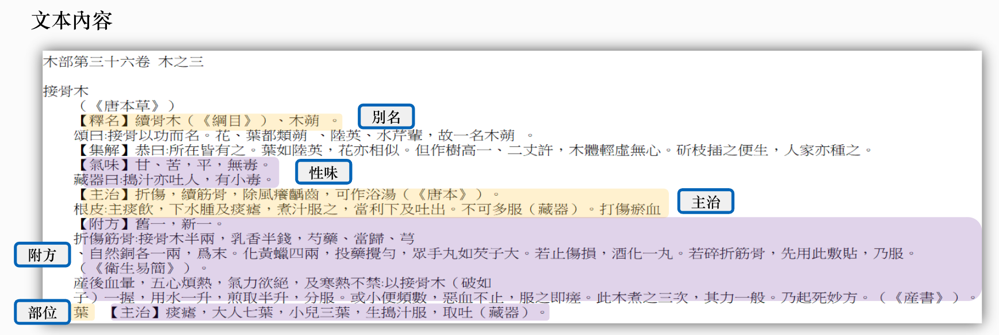

本草綱目解密: 古籍文本探勘、藥材資料庫建置與視覺化探索分析研究
背景與動機
中藥學自古以來據說已經有了上千年的歷史，相傳神農氏嘗百草的故事如經已不可考，但是不可否認的是中藥學的確是建立在古人不斷嘗試各種動植物甚至是礦物的結果記錄下來的智慧；其來源又以植物性藥材居多，使用的也最為普遍。儘管中藥學的歷史淵遠流長，可是綜觀整個近代醫學史上還是以西醫西藥為大宗其中原因除了西藥多半可以立即見效之外，西藥更有系統更有科學的方法來做紀錄以及驗證，而中藥抓藥的時候根據不同病症有著不同藥方甚至同種藥方在不同藥師抓得藥也不見相同，相較之下中藥學普遍給外界一種不可靠的歧見。隨著時代變化科技的進步資訊傳遞得更加快速與廣泛，在西方科學方法引入之後，中醫的大夫養成也從學徒制度，整個中醫學轉趨於專業化、學術化、國際化。再加上現在使用資訊的技術更加成熟，以這些技術來處理尚未結構化的中藥資料勢必能夠推動中藥學的現代化。
目的
本項目以單一古籍文本作建置分析。而本研究最主要的目的如下：-
1. 建立中藥關聯資料庫讓無結構的古籍文本化為方便分析的結構化資料
-
2. 以演算法和機器學習的角度來探討本草綱目藥材、病症、處方之間的關聯和群集關係
-
3. 將研究成果和大眾對中藥的使用方式比較異同處
研究方法
本篇研究的資料來源為《本草綱目》全文，共分為16部、載藥共有1892種、方劑總共有11096首。而使用工具則為Python、MySQL、Tableau、Flask
本研究開始先資料清理，運用Python使用正規表示式，做資料擷取。接著，再把資料預處理好的資料，使用MySQL建立中藥資料庫。利用LDA分群分析與Apriori關聯分析做資料分析，再利用Tableau軟體做中藥庫的視覺化探索分析，未來可提供為中藥大數據平台查詢。
資料清理
本草綱目屬於非結構化文字資料。文字資料通常是由表示單詞、句子，或者段落的文字流組成。由於文字資料非結構化（並不是整齊的格式化的資料表格）的特徵和充滿噪聲的本質，很難直接將機器學習方法應用在原始文字資料中。我們透過尋找內容規則以及利用 Regular Expression 擷取資料，將非結構化文字資料轉化成結構化文字資料。
非結構化資料常見問題
- 1. 資料缺漏
- 2. 格式不正確


資料結構化
-
1. 將目錄、標題、內文轉成結構化格式

閱讀文本後發現目錄、標題、內文有遵循以下規則項目 規則 目錄 下一行為空行 標題 下一行為縮排內容 內文 縮排內容
使用Regular Expression將目錄、標題、內文擷取出來
將目錄、標題、內文轉成結構化格式

-
2. 將別名、性味、主治、附方、部位轉成格式化格式
文本內容：

使用Regular Expression將別名、性味、主治、附方、部位擷取出來

將別名、性味、主治、附方、部位轉成結構化格式

-
3. 將性味的程度轉成結構化格式
文本內容：
 評分 (按強弱程度給予0~3分)
評分 (按強弱程度給予0~3分)
屬性 分數 微冷 1 冷 2 大冷 3
使用Regular Expression將性味的程度擷取出來

將別名、性味、主治、附方、部位轉成結構化格式
-
4. 將附方轉成結構化格式
文本內容：

使用Regular Expression將附方名稱和附方描述擷取出來

將附方名稱和附方描述轉成結構化格式

建立關聯資料庫
資料庫包含數個中藥以及病症資料表。將結構化後的文本建立關聯資料庫以便於之後的分析。使用Entity–relationship model呈現
資料表關聯圖

資料分析
1. 隱含狄利克雷分配（Latent Dirichlet Allocation，LDA)
LDA是一種非監督機器學習技術，可以用來識別大規模文檔集（document collection）或語料庫（corpus）中潛藏的主題信息。 它採用了詞袋（bag of words）的方法，這種方法將每一篇文檔視為一個詞頻向量，從而將文本資訊轉化為了易於建模的數字信息。但是詞袋方法沒有考慮詞與詞之間的順序，這簡化了問題的複雜性，同時也為模型的改進提供了契機。每一篇文檔代表了一些主題所構成的一個機率分佈，而每一個主題又代表了很多單詞所構成的一個機率分佈。

Use LDA to cluster diseases
本研究利用LDA分群分法，萃取病症名稱之特徵，且分成2至45群，目前最多分到45組，並請教相關領域的專家，發現分至45組的結果最為容易解釋，且可以嘗試分45群以上並觀察其結果。
2. Apriori藥物關聯性結果解讀
在中藥當中講究的是七情配伍，因為中藥配伍也是有很多禁忌的，兩種中藥放在一起的相互作用是不一樣的，有些可能相排斥，有些可能會增強藥效，還有些可能會直接的變成毒藥。七情配伍的內容是：

3. Word2vec與藥物關聯性
把詞（word）轉換成電腦可以了解的模式（vector）。它使用Continuous Bag Of Words（CBOW）演算法，利用上下文的詞來當作神經網路的輸入，最後預測這個目標的詞是什麼。電腦學習完成後我們可以任意抽出兩個詞，並得到他的詞向量，計算他們之間的距離。這個距離的概念代表了詞之間的相似性。
Word2Vec的關聯性結果不像Apriori的結果容易解釋。由於本研究《本草綱目》的文字記載屬於文言文或者是依據上下文的關係效果不如Apriori方法，計算出來結果只有0.2左右，並不是很相似，用前後文判斷中草藥間的關聯強度似乎不是好的做法。
資料視覺化
使用Tableau軟體，並匯入建立在MySQL的資料庫上的《本草綱目》，呈現視覺化的表現。
由上圖得知，在《本草綱目》中，草部出現的比例是占所有的文章篇數是最多的部首。

由上圖得知，在草部當中，甘草出現的頻率有151個，由可以知道有那些病狀是可以使用甘草治療的。
在中藥裡指的五味是分別為辛、甘、酸、苦、鹹五種不同的味道。由上圖得知，在《本草綱目》中，以辛的味道是占最多的。